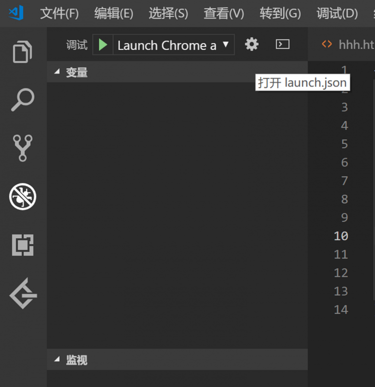
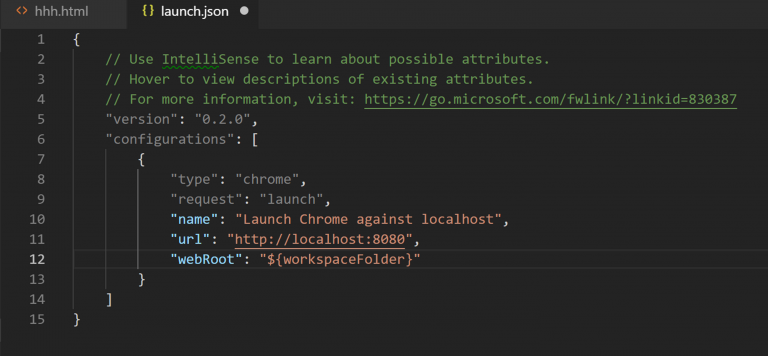
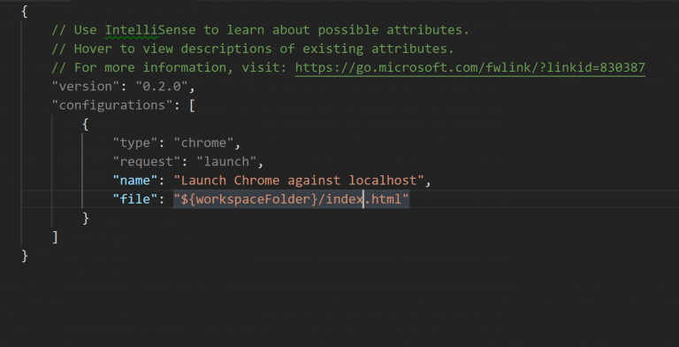

使用vscode编写前端环境
最近在学习web开发，学习HTML、CSS、JavaScript。准备使用vscode编写
debug for chrome环境配置
vscode拥有非常丰富的插件，可以编写各种各样语言的程序。其中编写前端程序
最受欢迎的还是debug for chrome插件。下载该插件

完成后进行配置
配置launch.json文件
vscode将调试插件的用户配置保存在launch.json中。这个文件保存在.vscode这个文件目录下。

在launch.json中有很多可配置的选项主要分为：
1.必须选择
type:debugger工具类型，如node，chrome等等
request:调试工具的启动方式，有两种
（1）launch:直接启动进程（2）attach:将程序附加到进程
name:调试器的名称
2.chrome配置选择
debug for chrome打开html文件的方式有两种，一种是使用本地http服务打开此时需要增加的配置有两个：url和webRoot。

其中，webRoot是将url解析到磁盘上的文件， “${workspaceFolder}” 是当前工作目录
第二中是之间在本地打开html文件此时需要配置”file”

在当前工作目录后输入需要打开的html文件即可
配置完成后即可使用
2.使用插件view in browser和open in browser插件
在vscode扩展中直接下载这两个插件，然后在html程序中直接按Alt+B即可执行HTML程序。
这个插件非常简单，基本不需要任何配置
如果 debug for chrome 想要做到这种效果，可以选择将launch.json中"file"的属性改为"${file}"意思是运行当前文件(你的vscode当前打开的页面)